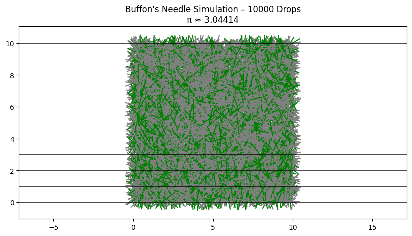

Problem 2
🯠Estimating π Using Monte Carlo Methods
📌 Motivation
Monte Carlo methods are powerful techniques that use random sampling to solve problems. One elegant application is estimating the value of π (pi).
We will explore two classic approaches:
- Circle Method — randomly generate points and use geometry to estimate π.
- Buffon’s Needle — simulate dropping a needle and observe how often it crosses lines.
🟠Method 1: Estimating π Using a Circle
🧠Idea
- Place a unit circle inside a square.
- Generate many random points inside the square.
- Count how many points fall inside the circle.
📠Formula
Let:
- \(N\) = total number of points
- \(C\) = number of points inside the circle
Then the estimate is:
import numpy as np
import matplotlib.pyplot as plt
def estimate_pi(num_points):
x = np.random.uniform(-1, 1, num_points)
y = np.random.uniform(-1, 1, num_points)
inside = x**2 + y**2 <= 1
pi_estimate = 4 * np.sum(inside) / num_points
# Plotting
plt.figure(figsize=(6, 6))
plt.scatter(x[inside], y[inside], color='blue', s=1, label='Inside Circle')
plt.scatter(x[~inside], y[~inside], color='red', s=1, label='Outside Circle')
plt.title(f'Estimating π with {num_points} Points\nπ ≈ {pi_estimate:.5f}')
plt.xlabel('x')
plt.ylabel('y')
plt.legend()
plt.axis('square')
plt.grid(True)
plt.show()
return pi_estimate
# Example run
estimate_pi(10000)
📊 Expected Results
For small samples (e.g., 100 points), the estimate may be inaccurate.
As the number of points increases (10,000 or more), the plot shows a clear circle, and the π estimate becomes more accurate.
🪡 Method 2: Estimating π Using Buffon’s Needle
🧠Idea
- Drop a needle on a floor with parallel lines.
- If the needle crosses a line, we count it.
- The chance of crossing is related to π.
📠Formula
Let:
- \(N\) = number of needle drops
- \(C\) = number of times the needle crosses a line
If needle length equals the distance between lines, then:

import numpy as np
import matplotlib.pyplot as plt
def estimate_pi_buffon(num_needles):
length = 1.0 # Needle length
spacing = 1.0 # Line spacing
crosses = 0
x_start = []
y_start = []
x_end = []
y_end = []
cross_flags = []
for _ in range(num_needles):
y_center = np.random.uniform(0, spacing / 2)
angle = np.random.uniform(0, np.pi / 2)
y_proj = (length / 2) * np.sin(angle)
if y_proj >= y_center:
crosses += 1
cross_flags.append(True)
else:
cross_flags.append(False)
x0 = 0
y0 = y_center
x1 = (length / 2) * np.cos(angle)
y1 = (length / 2) * np.sin(angle)
x_start.append(x0 - x1)
y_start.append(y0 - y1)
x_end.append(x0 + x1)
y_end.append(y0 + y1)
if crosses == 0:
pi_est = None
print("No crosses occurred — try more drops.")
else:
pi_est = (2 * num_needles) / crosses
# Plotting
plt.figure(figsize=(8, 4))
for i in range(num_needles):
color = 'green' if cross_flags[i] else 'gray'
plt.plot([x_start[i], x_end[i]], [y_start[i], y_end[i]], color=color, alpha=0.5)
for y in np.arange(0, spacing * 2, spacing):
plt.axhline(y=y, color='black', linewidth=0.5)
plt.title(f"Buffon’s Needle Simulation\nNeedles: {num_needles}, π ≈ {pi_est:.5f}" if pi_est else "No estimate")
plt.axis('equal')
plt.grid(True)
plt.show()
return pi_est
# Example run
estimate_pi_buffon(1000)

import numpy as np
import matplotlib.pyplot as plt
def buffon_pi(num_drops, L=1.0, D=2.0):
hits = 0
x_positions = []
angles = []
crosses = []
for _ in range(num_drops):
x = np.random.uniform(0, D / 2) # distance from center to nearest line
theta = np.random.uniform(0, np.pi) # angle in radians
if x <= (L / 2) * np.sin(theta):
hits += 1
crosses.append(True)
else:
crosses.append(False)
x_positions.append(x)
angles.append(theta)
pi_estimate = (2 * L * num_drops) / (D * hits) if hits != 0 else 0
# Visualization
plt.figure(figsize=(10, 5))
for i in range(num_drops):
x0 = np.random.uniform(0, 10)
y0 = np.random.uniform(0, 10)
dx = (L / 2) * np.cos(angles[i])
dy = (L / 2) * np.sin(angles[i])
color = 'green' if crosses[i] else 'gray'
plt.plot([x0 - dx, x0 + dx], [y0 - dy, y0 + dy], color=color)
for i in range(0, 11):
plt.axhline(i, color='black', linewidth=0.5)
plt.title(f"Buffon's Needle Simulation – {num_drops} Drops\nπ ≈ {pi_estimate:.5f}")
plt.axis('equal')
plt.show()
return pi_estimate
# Example run
buffon_pi(10000)
In Buffon’s Needle, green lines cross a black line (a “hit”), while gray lines miss. More drops = better π estimate.
📊 What You'll See
- Gray needles = did not cross a line.
- Green needles = crossed a line.
- Horizontal black lines = simulate the floor lines.
You will get a visual and numerical estimate of π.
📈 Convergence & Comparison
| Method | Description | Formula | Convergence Speed |
|---|---|---|---|
| Circle Method | Random points in square + circle | \(\pi \approx 4 \cdot \frac{C}{N}\) | Fast and accurate |
| Buffon’s Needle | Needle crossing parallel lines | \(\pi \approx \frac{2 \cdot N}{C}\) | Slower, more variable |
✅ Summary
- Circle method is simple and converges faster.
- Buffon’s needle is more classical and geometric.
- Both show how randomness helps estimate π.
- As the number of trials increases, estimates get closer to the true value.